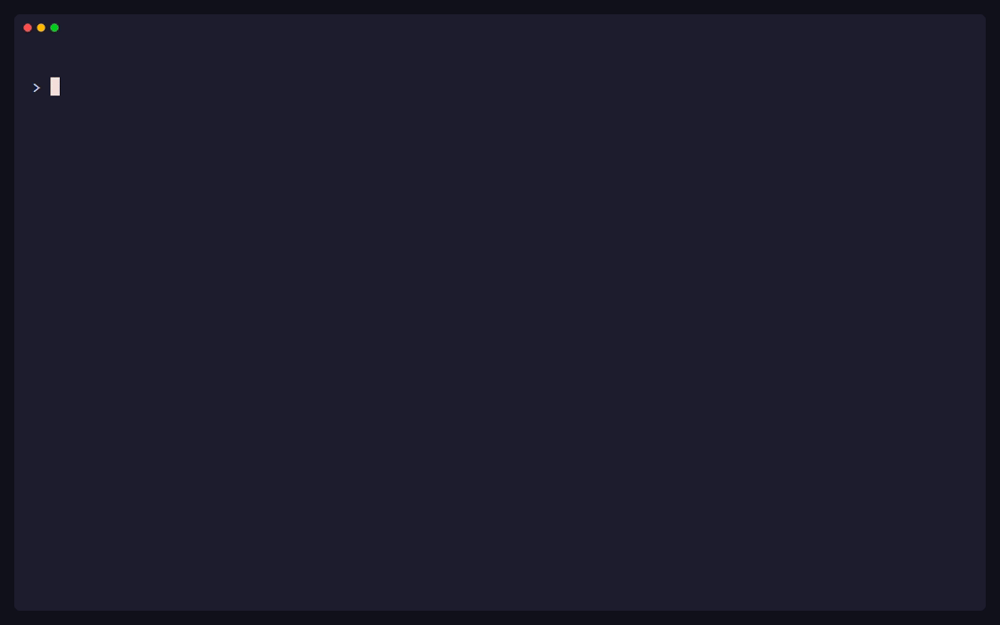

Telegram
Send messages, photos, and files to your configured bot conversation. Open a terminal chat when you need to stay in the loop.
send tg report.pdfThe terminal is your send button
Send a file, drop a message, open a browser share, or reach another machine. send puts six destinations behind one familiar command.
01 / IN MOTION
The recording runs real send commands. Only the recipient number and username are masked.

02 / SHORT COMMANDS
Choose a destination. Your message or file follows the same pattern every time.
$ send tg report.pdfUse your configured bot and remembered receiver. Send several files in one command, or add -m for a message.
03 / ONE TOOL, MANY ROUTES
Chat apps, nearby devices, and remote machines. Use the channel that fits the moment.
Send messages, photos, and files to your configured bot conversation. Open a terminal chat when you need to stay in the loop.
send tg report.pdfLink your account with a QR code, then message or send files to a remembered recipient.
send wa -m "On my way"Open a temporary browser share for downloads, messages, and uploads on your local network.
send http report.pdfDiscover another send receiver and transfer files with its receiver token.
send lan --listPush files to an authorized Android device, straight into its Downloads folder.
send adb report.pdfMove files to a server using your installed OpenSSH client and existing keys.
send ssh user@host report.pdf04 / YOUR DEVICES, CONNECTED
Transfer your Telegram setup and an existing WhatsApp linked session from a configured computer over a one-time encrypted local connection. No authentication files to copy by hand.
send device offersend device join <host:port>The code stays off the network and expires after five minutes by default.
A transferred WhatsApp session is a copy of one linked identity. Use it on only one computer at a time; either copy may later require relinking.
05 / GET GOING
Start with a channel you already use. Add more when you need them.
Use Scoop on Windows or the install script for your platform below.
send doctorSet up your Telegram bot or link WhatsApp from your phone. The CLI walks you through it.
send tg --setupOnce a receiver is remembered, you can send with a short command.
send tg report.pdf06 / TAKE IT WITH YOU
Install with Scoop on Windows, or use a platform script to install and update. Scripts verify release checksums, and uninstalling keeps your provider settings.
PowerShell · x64 and ARM64
scoop bucket add binbard https://github.com/binbard/scoop-binbard
scoop install binbard/sendThen use scoop update send to update or scoop uninstall send to remove it.
iwr https://send.binbard.org/install.ps1 -OutFile install.ps1
powershell -NoProfile -ExecutionPolicy Bypass -File .\install.ps1iwr https://send.binbard.org/uninstall.ps1 -OutFile uninstall.ps1
powershell -NoProfile -ExecutionPolicy Bypass -File .\uninstall.ps1Apple silicon and Intel
curl -fsSLO https://send.binbard.org/install.sh
sh install.shcurl -fsSLO https://send.binbard.org/uninstall.sh
sh uninstall.shx64 and ARM64
curl -fsSLO https://send.binbard.org/install.sh
sh install.shcurl -fsSLO https://send.binbard.org/uninstall.sh
sh uninstall.shAndroid ARM64
curl -fsSLO https://send.binbard.org/install.sh
sh install.shcurl -fsSLO https://send.binbard.org/uninstall.sh
sh uninstall.sh